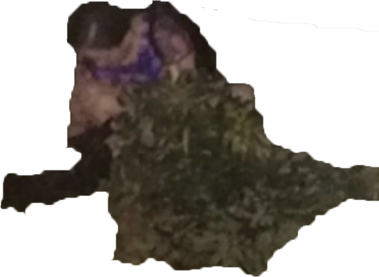
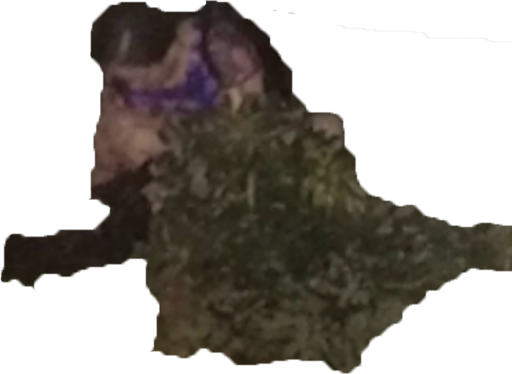

when i was stuck in a little squared room in the united states in 2020, the world was becoming an ever apocalyptic one but in slow motion. i watched endless videos on social criticism and politics on youtube, and the more i watched, the more i started to reflect on the
the realities i have encountered and apply critical thoughts to them. many times i recalled the experience of an internship i did at shenzhen tv station in 2018 in shenzhen, china. everything i encountered there was unimportant but strange, and at the time i did not know how to react to them. now after hearing many great scholars speak on various subjects at debates and forums, i decided to turn back to what happened that summer, and to form my own informal commentaries on realities in shenzhen with every relevant material i have at hand.
my parents moved to shenzhen in the early 2010s. i stayed with them in the city every summer. it is one of the most boring places i have been to—filled with monolithic skyscrapers, wide and straight avenues, fancy malls, and barren parks. however, it is also the most capitalistic and most promising place in china. many young people from all over the country move there to work with great financial aspirations. for my thesis project, i decided to employ the limited first-hand materials i have, including writings and visual forms, to create an alternative framework for understanding shenzhen and what is happening there. but as information is too fragmented and realities are too complicated, i can only make my thesis project as a growing anthology based on personal observations. every piece included in this project is intended to be self-sustained on its own, but i hope when all parts are viewed together, they build a larger narrative—something closer to the intricate realities i know in shenzhen.
 


about